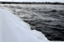
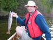

- N E W

- Reserve Beauchene 2016
- Plummers Lodge, Great Bear Lake, NWT July 2015
- Algonquin Park Brook Trout, June 2014
- Kesagami, 2014
- Bisset Creek, Sept 2014
- Reserve Beauchene, August 2014
-
-
- A L G O N Q U I N

-
Algonquin Crown Land Adventures 2012
- Algonquin Park Brook Trout, April 2011
- Algonquin Park Brook Trout, April 2011
- Algonquin Park Brook Trout, September, 2009
- Algonquin Park Brook Trout, May, 2009
- Algonquin Park Brook Trout, April, 2009
- Algonquin Park Brook Trout, May, 2008
- Algonquin Park Fall Camping, September, 2007
- Algonquin Park Fall Brook Trout, September, 2006
- Algonquin Park, May Brook Trout, 2006
- Algonquin Park Brook Trout, April, 2006
- Algonquin Park, Wendigo Lake, Sept 2005
- Algonquin Park Lakers, August 2005
- Brook trout fishing in Algonquin 2005,May 6-8.
- Brook trout fishing in Algonquin 2005 opening day.
- Brook trout fishing in Algonquin. Big Bisset 2004